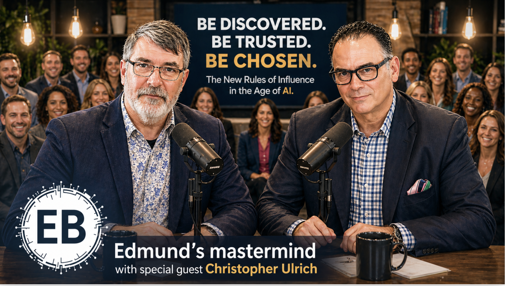

While you're still tweaking your bio, optimizing for keywords nobody searches anymore, and fighting for a page-one Google rank that 65% of users never click, the top 1% of realtors have already moved past Google entirely.
When a buyer asks ChatGPT "who is the best realtor in Delray Beach?" — the AI is answering. By name. With one realtor.
That realtor is not the loudest. Not the most expensive. Not the one with the most listings. It's the one whose website has been formatted to be discovered, trusted, and chosen by AI.
If you're tired of writing content nobody reads while AI chatbots eat your search traffic...
If you want to be the realtor ChatGPT, Perplexity, Gemini, and Google's AI Overview recommend by name...
If you're ready to stop ranking for keywords and start being chosen...
Then this is your session.
This isn't theory. You'll get battlefield-tested demonstrations from a 30-year SEO veteran who's been quietly running the playbook AI now requires — and is currently getting his small business clients cited by ChatGPT and Perplexity while their competitors disappear.
Christopher Ulrich has built marketing campaigns for Citibank and AT&T. Today he runs SEO + AIO for a roster of small businesses paying him $1,500 to $10,000 a month each. Every one of his clients was already winning AI citations before the rest of the industry knew "AIO" was a word.
He's spending one hour with us breaking down the exact three-system playbook so you can do this on your own real estate website by next Friday.
"The Question That Sells The House"
Stop saying "I'm a great realtor in Delray." Start answering: "What gated communities are in Delray Beach?" "What's the difference between a country club and a gated community?" "What's the HOA fee at Mizner Country Club?"
When AI scrapes the web, it's looking for the most trustworthy answer to a buyer's question. Authority comes from answering, not announcing.
Your opportunity: Rewrite your community pages so AI discovers you — not Realtor.com, not Zillow, not the brokerage's blog from 2019.
"The 20-Question Community Page"
Google no longer indexes by keyword. It indexes by concept depth. A thin community page is invisible — but a community page with 20 frequently-asked questions, 8 supporting blog posts, and clean internal links becomes a topical authority that wins on both Google AND ChatGPT.
Your opportunity: Pick one community (Boca, St Andrews, Mizner, Polo Club, your farm) and turn it into a trust engine in 30 days.
"Quote Me By Name"
ChatGPT, Perplexity, and Google AI Overviews don't quote random pages. They quote pages structured to be quoted: clean Q&A blocks, FAQPage JSON-LD schema, named expert bylines, fresh date stamps, and authoritative citations.
When you format your content this way, AI assistants treat you as a primary source. Your name shows up in the answer.
Your opportunity: Convert your bio + 3 listing pages into AI-citable format using the exact templates Christopher uses for his $10K/month clients.
Session 1 — Wednesday, May 6, 2026
9:00 AM Eastern / 6:00 AM Pacific
Session 2 — Friday, May 8, 2026
12:00 PM Eastern / 9:00 AM Pacific (Pacific-friendly)
Zoom link: emailed upon registration
Workbook + PDF: released morning of each session as an HTML landing page (light/dark mode)
Recording: Yes — both sessions recorded for the mastermind archive
What if you could:
...all while the 99% of realtors who didn't show up are still wondering why their Google traffic is dropping?
You know which one moves the needle.
www.reignation.com/ai-search